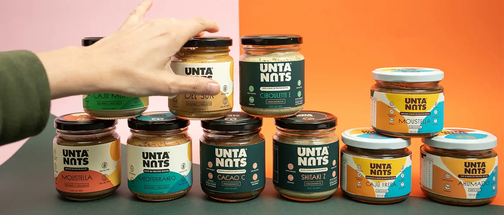

Llevar UNTANUTS a tu mesa, de una manera creativa, deliciosa y nutritiva.
Nuestra inspiración es crear alimentos complejos y funcionales nutricionalmente.
Nuestro esfuerzo es tecnológico para poder integrar la gran variedad de Tree Nuts que existen en recetas que puedan penetrar en el mercado y encuentre su lugar en la mesa diaria de las personas.
UNTANUTS quiere diversificar y llenar tu día a día con la variedad de productos que la tierra tiene para ofrecernos.